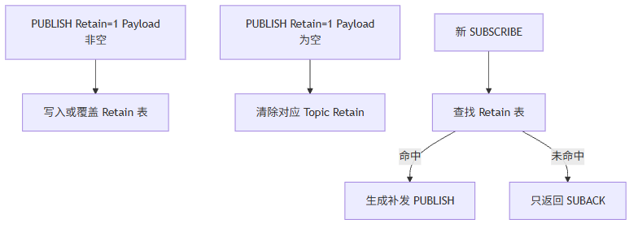
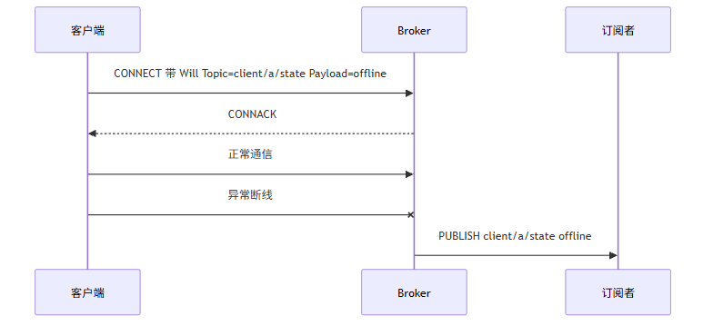
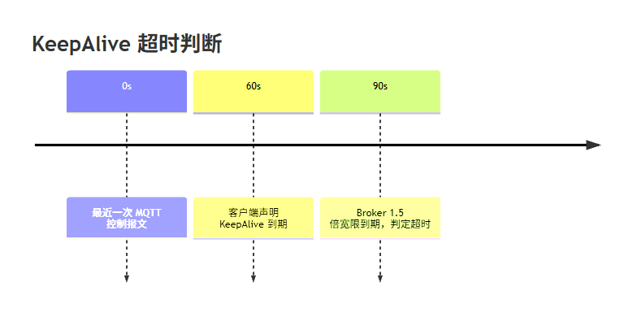
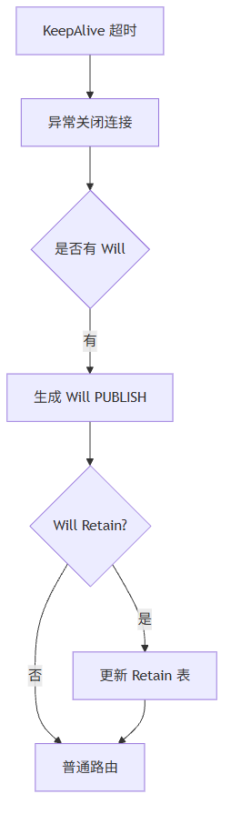

这一篇讲 Broker 的三个现场能力：Retain 保存主题最后值，Will 处理异常离线通知，KeepAlive 清理死连接。它们不是锦上添花，而是让 MQTT 在工业现场真正可用的基础能力。
适合谁收藏
- Retain 发布成功但新订阅收不到的人
- 想用 MQTT 表示设备在线离线状态的人
- 正在处理客户端死连接的人
- 想把 Broker 从“能转发”提升到“现场可用”的人
一个 Broker 会转发 PUBLISH，只能说明它能跑通“实时消息”。
但工业现场还会问：
- 新客户端上线后，能不能马上拿到设备当前状态？
- 设备异常掉线，其他客户端能不能收到通知？
- 客户端死了不发包，Broker 会不会一直占着槽位？
这三个问题对应：
Retain、Will、KeepAlive。
先给结论：
只会转发 PUBLISH 的 Broker，只能算半个 Broker。 工业现场要的是状态可恢复、异常可感知、死连接可清理。
但这里的 Retain、Will、KeepAlive 仍然服务于小型工业现场，不等同于带数据库持久化、集群复制和离线会话恢复的大型 Broker。
一、Retain 解决“最后值”问题
假设 PLC 发布：
Topic: line1/plc/status
Payload: RUN
Retain: TRUE后来 HMI 才上线并订阅：
line1/plc/status如果 Broker 支持 Retain，HMI 应该立刻收到 RUN。 如果不支持，HMI 只能等下一次发布。
Retain 生命周期：

Retain 表不是消息队列。 一个 Topic 只保存最后一条保留消息。
二、Retain 的操作表
| 操作 | Broker 行为 |
|---|---|
| Retain=0 发布 | 正常路由，不写 Retain 表 |
| Retain=1 且 Payload 非空 | 写入或覆盖该 Topic 的 Retain |
| Retain=1 且 Payload 为空 | 清除该 Topic 的 Retain |
| 新订阅命中 Retain | SUBACK 后补发保留消息 |
| Topic Filter 命中多个 Retain | 按预算逐条补发 |
现场最常见误区：
客户端勾选 Retain 发布成功，不代表 Broker 已经实现 Retain。
真正的验收方法是：
- 客户端 A 对
CodeSys发布一条 Retain 消息。 - 客户端 B 重新连接并订阅
CodeSys。 - B 应该立即收到这条消息。
三、Will 解决异常离线问题
Will 是客户端在 CONNECT 时提前交给 Broker 的遗嘱消息。
如果客户端异常断线，Broker 代替它发布 Will。

关键区别：
| 断开方式 | 是否触发 Will |
|---|---|
| 客户端发送 DISCONNECT | 否 |
| KeepAlive 超时 | 是 |
| TCP 异常断开 | 是 |
| 协议错误导致关闭 | 通常是 |
这在工业现场非常有用。比如：
device/plc01/online = offline如果 Will 再配合 Retain，就能让新上线的 HMI 也看到“最后离线状态”。
四、KeepAlive 解决死连接问题
MQTT KeepAlive 不是“定时发心跳”这么简单。
它是客户端和 Broker 对连接存活的约定：
如果在 KeepAlive 时间内没有任何控制报文，客户端应该发 PINGREQ；Broker 收到后回 PINGRESP。
Broker 判断超时时通常按 1.5 倍宽限：

如果客户端声明 KeepAlive = 60，Broker 不应该 60 秒一到就立刻杀。 工业网络有抖动，1.5 倍宽限更稳。
五、Retain / Will / KeepAlive 三者会汇合
这三个功能不是孤立的。

这也是为什么 Broker 不能只在连接 FB 里“关掉 TCP”就结束。
异常关闭可能会触发 Will。 Will 可能会更新 Retain。 Retain 更新后还要路由给订阅者。
六、ST 代码入口
| 代码入口 | 作用 |
|---|---|
FB_MqttBrokerRouter.M_UpdateRetain | 写入、覆盖或清除 Retain 表 |
FB_MqttBrokerRouter.M_FindNextRetain | 新订阅时查找匹配 Retain |
FB_MqttBroker.M_ServiceConnections | 检查连接状态、KeepAlive、异常清理 |
FB_MqttBroker.M_HandlePublish | 处理普通发布和 Retain 更新 |
ST_MqttBrokerRetainedMessage | Retain 表项结构 |
Retain 更新逻辑大概是：
IF stPublish.xRetain THEN
fbRouter.M_UpdateRetain(
sTopicName := stPublish.sTopicName,
pPayload := stPublish.pPayload,
uiPayloadLen := stPublish.uiPayloadLen,
eQoS := stPublish.eQoS);
END_IFKeepAlive 检查逻辑大概是：
udiTimeoutMs := TO_UDINT(uiKeepAliveSec) * 1500;
IF (udiNowMs - udiLastActivityMs) > udiTimeoutMs THEN
xNeedClose := TRUE;
xNeedPublishWill := xWillEnabled;
END_IF七、现场排障表
| 现象 | 优先检查 | 可能原因 |
|---|---|---|
| Retain 勾选后新订阅收不到 | uiRetainCount、sLastRetainTopic | 没写 Retain 表或没做订阅补发 |
| Retain 清不掉 | Payload 长度是否为 0 | 清除规则未实现 |
| 正常断开也发 Will | 是否收到 DISCONNECT | 正常断开标志没设置 |
| 异常断开不发 Will | CONNECT 是否解析 Will | Will 字段没保存 |
| 客户端死了还占槽位 | udiLastActivityMs | KeepAlive 未检查或宽限过大 |
模型边界与验证路径
Retain、Will、KeepAlive 看起来是三个功能点，往上看其实是会话生命周期模型。
| 功能 | 解决的边界 | 验证路径 |
|---|---|---|
| Retain | Topic 最后状态由谁保存 | 新客户端订阅后是否立即收到最后值 |
| Will | 异常离线由谁声明 | 拔掉客户端或异常断开后是否发布 Will |
| KeepAlive | 死连接由谁清理 | 停止客户端发送后是否按 1.5 倍宽限清理 |
结论分级：
| 结论 | 可信度 | 边界 |
|---|---|---|
| Retain 必须通过新订阅补发验证 | high | 只看发布成功不够 |
| 正常 DISCONNECT 不应触发 Will | high | 这是 MQTT 会话语义 |
| KeepAlive 超时要结合扫描周期和网络抖动设置 | medium | 不同 PLC 任务周期和客户端行为会影响观测结果 |
这里先不要把 Retain 理解成持久化数据库。当前轻量 Broker 保存的是 PLC 内存中的最后值，断电、下载或工程重启后的行为要按实际工程配置重新验证。
八、这一篇你最该记住的 5 句话
- Retain 解决新订阅者获取主题最后值的问题。
- Will 解决异常离线通知问题。
- KeepAlive 解决死连接清理问题。
- 正常 DISCONNECT 不应该触发 Will。
- Retain、Will、KeepAlive 最后都会回到 Broker 的路由和连接清理调度里。
下篇预告
下一篇讲性能优化。
重点是：
为什么 PLC Broker 会有明显延迟，以及为什么从“一帧一写”改成“批量粘包写出”能明显改善实时性。
完整 ST 代码
先看 Retain 表项的数据结构，来自 ST_MqttBrokerRetainedMessage.st。它把 Topic、Payload、QoS 和更新时间固定在一条静态表项里，符合 PLC 侧“容量先定死、运行不动态扩张”的工程习惯。
/// =======================================================================
/// 名称 : ST_MqttBrokerRetainedMessage
/// 功能 : Broker Retain 保留消息表项
/// 说明 : 按 Topic Name 保存最近一条保留消息，新订阅命中后补发。
/// 编程人员 : ControlRookie
/// 时间 : 2026-05-08
/// 版本 : V1.0
/// =======================================================================
TYPE ST_MqttBrokerRetainedMessage :
STRUCT
xUsed : BOOL; // 当前 Retain 表项是否有效
eQoS : E_MqttQoS; // Retain 消息保存时的 QoS 等级
uiTopicLen : UINT; // Topic Name 有效长度[byte]
uiPayloadLen : UINT; // Payload 有效长度[byte]
udiUpdatedAtMs : ULINT; // 最近一次更新该 Retain 表项的系统时间戳[ms]
sTopic : STRING(GVL_MqttBroker.cnMaxTopicLen); // Retain 消息主题名，不允许包含通配符
sPayload : STRING(GVL_MqttBroker.cnMaxPayloadLen); // Retain 消息载荷文本；空载荷表示应清除表项
END_STRUCT
END_TYPE下面这段来自 FB_MqttBrokerRouter.M_UpdateRetain.st。Retain 的规则很直接：Retain PUBLISH 且 Payload 为空时清除保留消息，否则新增或覆盖同 Topic 的保留记录。
IF aRetained[uiIndex].sTopic = stPublish.sTopic THEN
IF stPublish.uiPayloadLen = 0 THEN
aRetained[uiIndex].xUsed := FALSE;
aRetained[uiIndex].sTopic := '';
aRetained[uiIndex].sPayload := '';
aRetained[uiIndex].uiTopicLen := 0;
aRetained[uiIndex].uiPayloadLen := 0;
aRetained[uiIndex].eQoS := E_MqttQoS.byQoS0;
aRetained[uiIndex].udiUpdatedAtMs := udiNowMs;
IF uiRetainCount > 0 THEN
uiRetainCount := uiRetainCount - 1;
END_IF
ELSE
aRetained[uiIndex].eQoS := stPublish.eQoS;
aRetained[uiIndex].uiTopicLen := stPublish.uiTopicLen;
aRetained[uiIndex].uiPayloadLen := stPublish.uiPayloadLen;
aRetained[uiIndex].udiUpdatedAtMs := udiNowMs;
aRetained[uiIndex].sTopic := stPublish.sTopic;
aRetained[uiIndex].sPayload := stPublish.sPayload;
END_IF
eLastError := E_MqttBrokerError.uiNoError;
M_UpdateRetain := TRUE;
RETURN;
END_IF新订阅命中 Retain 表时，Broker 生成一条带 xRetain := TRUE 的普通投递任务，后续仍复用 PUBLISH 投递队列。
IF F_MqttTopicMatch(sFilter := sTopicFilter, sTopic := aRetained[uiIndex].sTopic) THEN
stDelivery.xValid := TRUE;
stDelivery.uiSourceSlot := 0;
stDelivery.uiTargetSlot := uiTargetSlot;
stDelivery.uiPacketId := 0;
stDelivery.eQoS := F_MqttMinQoS(ePublishQoS := aRetained[uiIndex].eQoS, eMaxQoS := eMaxQoS);
stDelivery.xDup := FALSE;
stDelivery.xRetain := TRUE;
stDelivery.uiTopicLen := aRetained[uiIndex].uiTopicLen;
stDelivery.uiPayloadLen := aRetained[uiIndex].uiPayloadLen;
stDelivery.sTopic := aRetained[uiIndex].sTopic;
stDelivery.sPayload := aRetained[uiIndex].sPayload;
xFound := TRUE;
eLastError := E_MqttBrokerError.uiNoError;
M_FindNextRetain := TRUE;
RETURN;
END_IFWill 的实现不需要另起一套路由机制。异常清理时把 Will 组装成标准 ST_MqttBrokerPublishFrame，再交给 M_HandlePublish，这样 Retain、QoS 和订阅路由都会走同一套逻辑。
IF aConnectionStates[uiIndex].xWillFlag AND NOT aConnectionStates[uiIndex].xGracefulDisconnect THEN
stWill.xValid := TRUE;
stWill.uiSourceSlot := uiIndex;
stWill.uiTargetSlot := 0;
stWill.uiPacketId := 0;
stWill.eQoS := aConnectionStates[uiIndex].eWillQoS;
stWill.xDup := FALSE;
stWill.xRetain := aConnectionStates[uiIndex].xWillRetain;
stWill.uiTopicLen := TO_UINT(LEN(aConnectionStates[uiIndex].sWillTopic));
stWill.uiPayloadLen := TO_UINT(LEN(aConnectionStates[uiIndex].sWillPayload));
stWill.sTopic := aConnectionStates[uiIndex].sWillTopic;
stWill.sPayload := aConnectionStates[uiIndex].sWillPayload;
M_HandlePublish(uiSourceSlot := uiIndex, stPublish := stWill);
stMetrics.udiWillPublished := stMetrics.udiWillPublished + 1;
END_IF系列导航
- 系列定位：第 6 篇
- 上一篇：PUBLISH 不是收到就转发：Broker 怎么处理 QoS、PacketId 和多客户端 fanout
- 下一篇：为什么 PLC Broker 会有延迟？从 TCP_Write 一帧一写到批量粘包写出
评论区预留
这里先保留评论和回复结构，不接入第三方服务。后续统一决定登录、匿名、审核、反垃圾和静态站兼容策略。